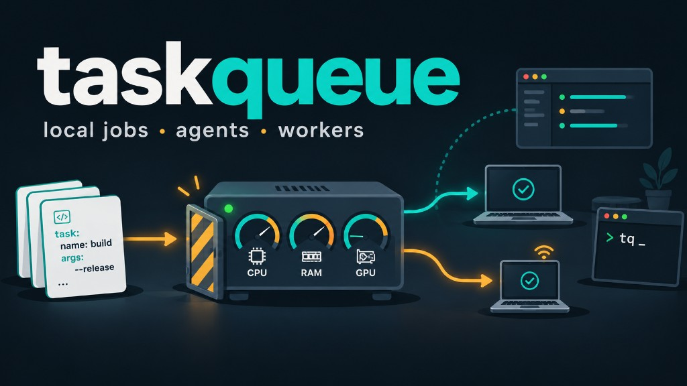

taskqueue
local jobs · agents · workers

Run long YAML jobs on your own machines without melting them.
One daemon, tq CLI, web UI, and MCP for coding agents —
with CPU, RAM, and GPU admission.
Not Celery, Kubernetes, or CI. Not the 2011 AMQP project rojkov/taskqueue. We do not phone home — see privacy.